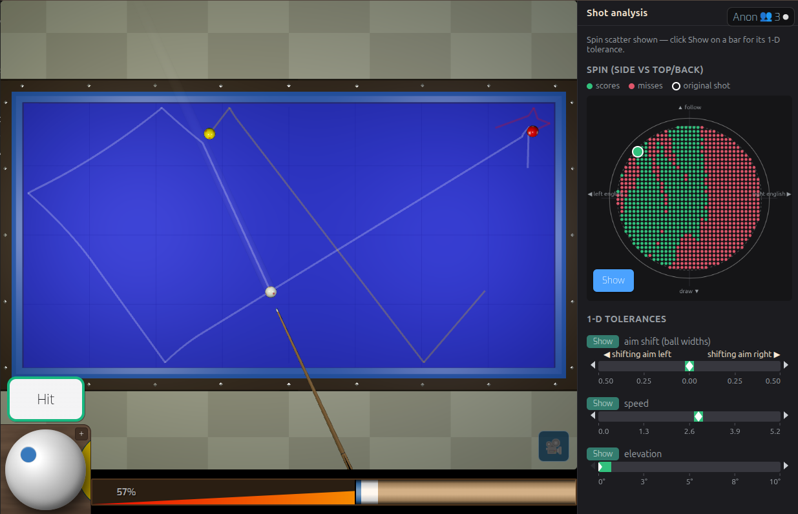
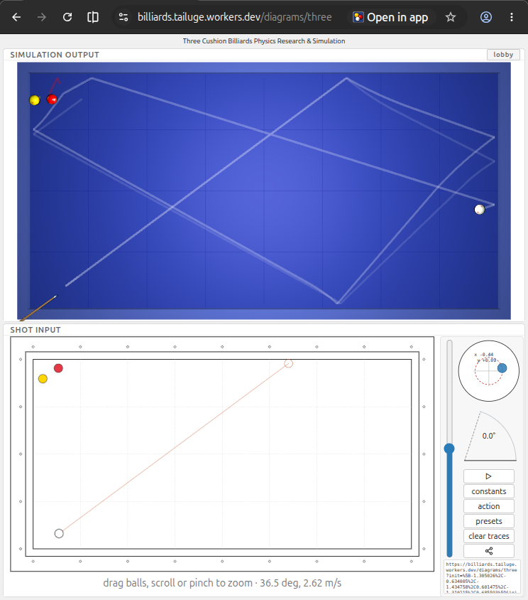
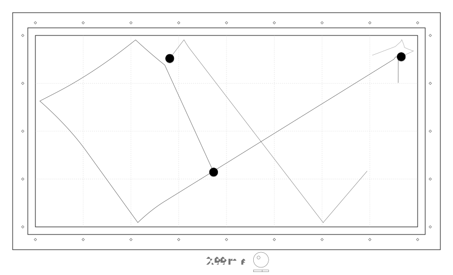
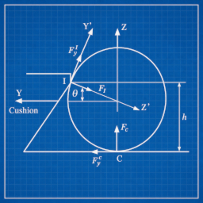

スリークッションのショット分析：狙い・撞点・力加減の許容範囲
予想される軌道を1本引くだけでは分からないところまで、スリークッション（3クッション）の球を調べられます。配置と撞く球を決めたら、狙い・撞点（手玉のどこを撞くか）・力加減・キューの傾きを少しずつ変えてみてください。違いは、台の横の分析パネルに出ます。
パネルには、元の球のまわりで設定を変えた球が、1点が取れたかどうかで色分けされて並びます。手玉の撞点を円の上に並べた分布図と、狙い・力加減・キューの傾きの許容範囲を見れば、どの要素が結果を左右しているのかが分かります。
この球は、どこまでずれても決まるのか
狙いや力加減が少しくらいずれても決まる、余裕のある球があります。逆に、ほんの少しの違いで結果が変わってしまう球もあります。狙い（厚み）がわずかにずれる、撞点が変わる、力加減が違う。それだけで、手玉はまったく違う方向へ進みます。

この差は、ショット分析で実際に確かめられます。配置はそのままにして、狙い、力加減、撞点、キューの傾きを一つずつ動かしてみてください。それぞれの変化が、軌道と成功率にどう表れるかが分かります。
実際の台でこの球を撞くとき、どこを合わせればいいのかが見えてきます。
パネルは、決まる範囲の地図になる
分析パネルには、元の球と、そこから設定を変えた球が並びます。緑は取れた球、赤は取れなかった球、白い印はいまの設定です。分布図は、手玉を正面から見た円の上に撞点を並べたもので、横がひねり（横回転）、縦が押し球と引き球です。狙い・力加減・キューの傾きの各バーにある白い目盛りは、元の球の値です。
こうして見えてくるのは、この球の許容範囲の地図です。どこまでが取れる範囲か、そこを外れるとどれくらい急に取れなくなるかが分かります。全体を表示できるのは、一度に1項目だけです。バーの「Show」を押すと、分布図がその項目だけの1次元の変化に切り替わります。試したすべての設定は「Download CSV」から書き出せます。
どこに敏感なのかを確かめる
狙いのずれ（ボール直径の何倍か）
決まらなくなるまで、イメージボール（的球に当てる位置を示す仮の球）のラインを左右にどれだけ動かせるかを、ボール直径の何倍かで示します。左右の表示は、台を見たときの向きに合わせています。正確な狙いが要る球と、少しくらいずれても取れる球を見分けられます。
撞点（ひねり・押し・引き）
手玉のどこを撞くかで、ひねり・押し球・引き球がどう変わるかを調べます。一つの撞点を覚えるのではなく、結果が出る撞点の幅を見つけてください。
力加減
この配置が力加減にどれくらい敏感かを試します。決まった位置に、決まった強さで届かせないといけない球もあれば、強さが少しくらい違っても取れる球もあります。
キューの傾き
キューを寝かせた状態から立てた状態まで変えて、軌道と結果がどう変わるかを見ます。撞き上げが結果を左右する球で役立ちます。傾きのバーを選ぶと、キューを立てる角度の調整も開きます。
撞いた球を、あとで見返せる形にする
このシミュレーターは、自分のスリークッションを試す場所になります。試合で出てきた気になる配置を再現して、詳しく調べられます。別の撞き方も試して、狙い・撞点・力加減がどこまで許されるのかを探せます。結果を図にしておけば、あとから見返せます。
「この球はこう撞く」と覚えるだけでは終わりません。なぜ決まるのか、少しずれたらどうなるのかを、自分で確かめられます。

教えるとき、共有するときの図を作る
分析した配置は、自分のノートや練習資料、ビリヤードの記事に載せる図にできます。 図のエクスポートを使うと、配置をSVGの図に変換できます。拡大しても輪郭がぼやけないので、ページに載せたり、印刷して練習に使ったりできます。
スリークッションの知識を整理して、人に伝えるのにも使えます。指導者、ブロガー、掲示板やコミュニティで発信する人、研究者にも役立ちます。

ビリヤード台から練習ノートへ
気に入った配置は、撞いたあとに記録しておけます。分析して分かったことと図を残せば、次の練習の参考になります。試合で出た難球、システムの練習で出てきた配置、もう少し理解したい球など、自分だけの配置集が作れます。
実際の台での練習に代わるものではありません。練習と練習の間にも球を試し、図にして、あれこれ考えられるようにするためのものです。
さらに深く知りたい人へ
このシミュレーターは、ボール、クッション、摩擦、回転を物理モデルで計算しています。図を見ているだけでは分からない疑問も、これで確かめられます。
- 力を弱めると、軌道はどれくらい変わるのか
- 的球に届かなくなるまで、ひねりをどれだけ弱められるか
- 狙いはどれくらい正確でないといけないのか
- この球の難しさは、どの要素で決まっているのか

値を変えて、もう一度撞いてみてください。
1点取るだけでは、練習にならない
いい練習道具は、何を練習すればいいかを示してくれます。許容範囲の狭い球なら精度が要ると分かり、広い球なら技術のほかの部分に意識を向けられます。
サイトのスリークッション試験や練習モードと組み合わせれば、ショット分析をはさんで、 撞く → 分析する → 練習する → 試験で確かめるという流れができます。